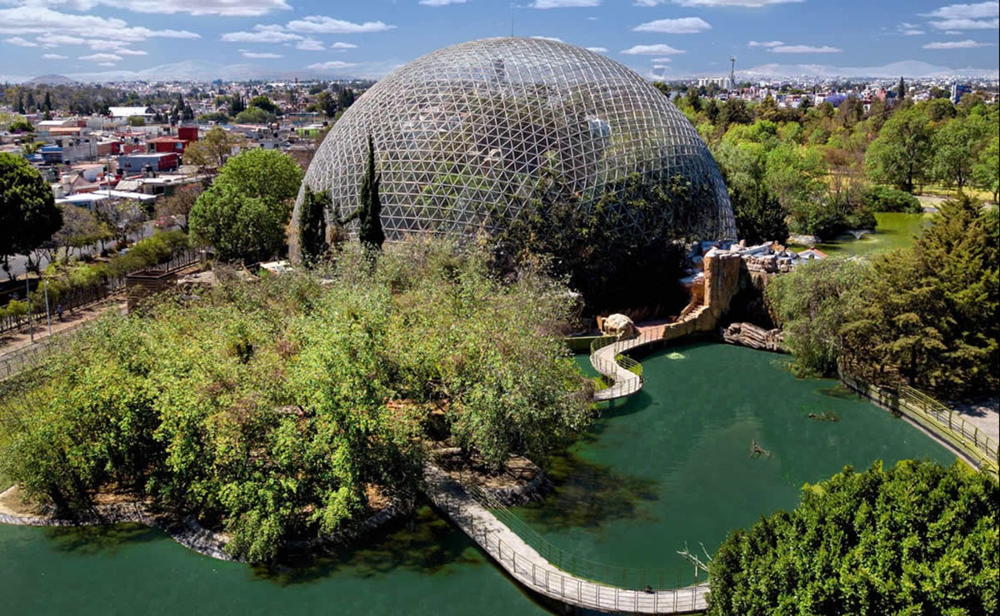
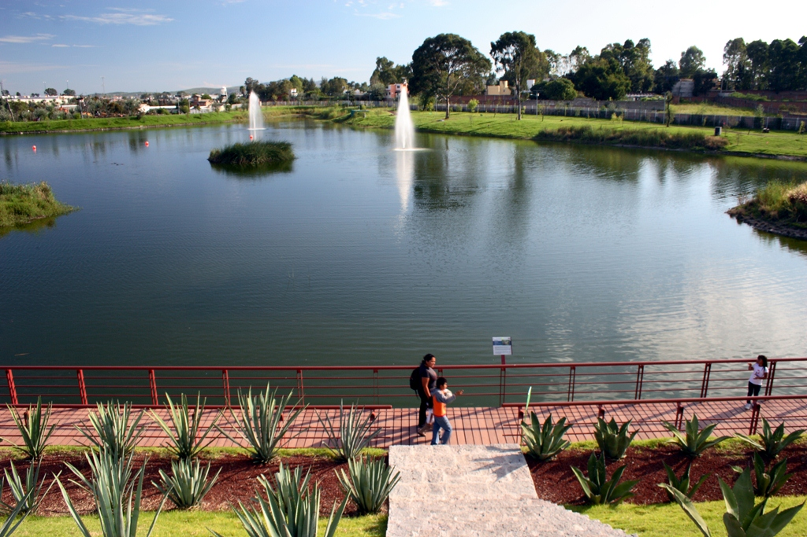
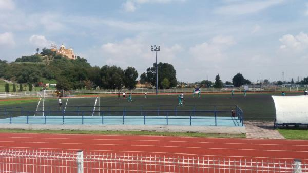
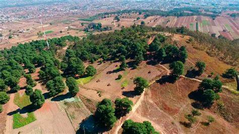
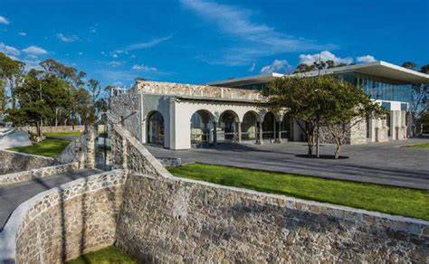
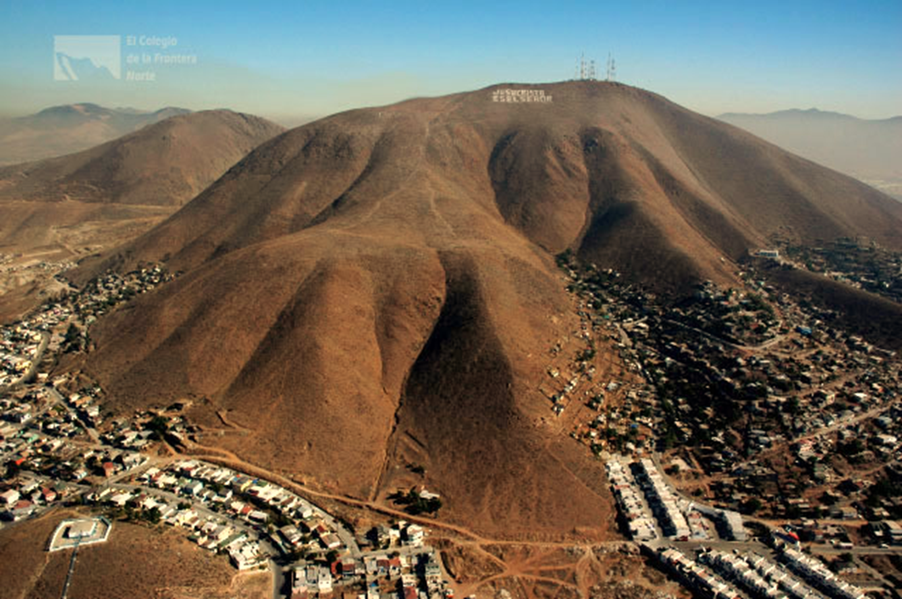

Lugares Deportivos en Puebla


Parque Centenario Laguna de Chapulco
Un parque con un circuito para correr, puentes y una fuente.
Más información

Centro Deportivo Quetzalcóatl
Un centro deportivo ideal para correr y disfrutar de la vista de las pirámides y el volcán.
Más información

Cerro Zapotecas
Un cerro popular para el trail running y otras actividades al aire libre.
Más información

Zona Histórica de Los Fuertes
Un lugar ideal para entrenamientos de cuestas con subidas y bajadas.
Más información
